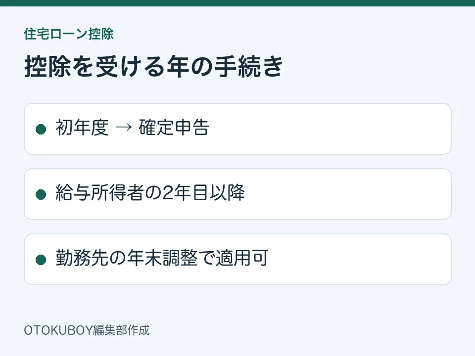
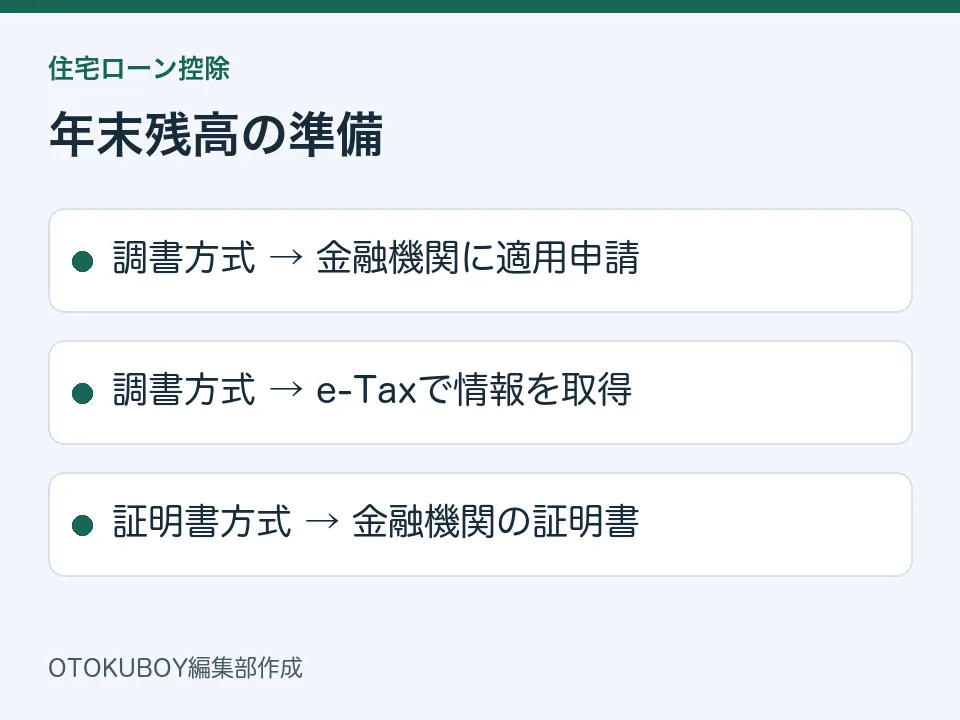

住宅ローン控除の初年度は、会社員も確定申告が必要です。借入先が調書方式に対応し、適用申請をした場合は、年末残高の情報を取得して申告に使います。証明書方式では金融機関が発行する年末残高等証明書を用意します。以下は2026年11月27日時点の案内をもとに、2026年に新築住宅へ入居したケースを中心に説明します。
01初年度と2年目以降の手続き
| いつ | 手続き | 先に確認すること |
|---|---|---|
| 初年度 | 確定申告 | 居住を始めた年と住宅・借入先の区分 |
| 給与所得者の2年目以降 | 年末調整で適用可 | 勤務先の書類提出期限と提出方法 |
| 2年目以降に確定申告で控除を受ける場合 | 確定申告 | 控除証明書など申告に使う書類 |

何年分から申告するかは入居した年から確認します。例えば2026年末に住宅を取得し、2027年初めに実際に住み始めた場合、取得から6か月以内の入居と年末までの継続居住などの要件を満たせば、2027年分から対象になります。入居年のほか、所得や床面積、住宅区分などの要件を国税庁の案内で確かめます。
02必要書類は借入先の方式と住宅区分で変わる
| 確認したいこと | 調書方式 | 証明書方式 |
|---|---|---|
| 金融機関での準備 | 適用申請書を提出 | 年末残高等証明書の交付方法を確認 |
| 年末残高の確認 | e-Taxで情報の取得を希望し、格納を確認 | 金融機関が交付した証明書を確認 |
| 申告で使うもの | 取得した年末残高等情報 | 年末残高等証明書 |

年末残高の書類と住宅の書類を別々に集めます。計算明細書のほか、登記事項証明書、工事請負契約書または売買契約書の写し、住宅の性能区分を示す書類などを確認します。土地の購入に係るローンも控除の対象に含める場合は、土地の書類も確認します。調書方式では契約書の写しなど一部の添付を省略できる場合があります。新築の敷地にする土地のローンについて控除を受ける際の土地の売買契約書の写しは、国税庁が省略の仕組みの例外として案内しています。
03調書方式で年末までに進める手順
- 借入先が調書方式に対応しているか確認し、対応先には住宅ローン控除の適用申請書を提出します。
- e-Taxで年末残高等情報の取得を希望する設定を行います。自動入力する場合はマイナポータル連携の準備も確認します。
- 翌年、e-Taxのメッセージボックスで残高等情報の格納を確認し、住宅の書類と合わせて確定申告書を作成します。
- 給与所得者が翌年分から年末調整を利用する場合に備え、控除証明書の受け取り方と勤務先の提出方法を確認します。
ポイント国税庁の目安では、居住開始年の12月末までに事前準備をした場合、年末残高情報は翌年2月中旬に格納されます。
情報の格納時期は申告期限と別に確認します。金融機関に適用申請書を出した日と、e-Taxの事前準備をした日をそれぞれ控えておくと、情報が見つからない場合に確認しやすくなります。ふるさと納税もした人は、同じ年の申告の準備として年末までに確認する寄附と申告の手続きも確認できます。
04よくある質問
会社員は初年度から年末調整で控除を受けられますか？
初年度は確定申告が必要です。給与所得者は2年目以降の年分を年末調整で手続きできます。
調書方式なら金融機関の年末残高等証明書は必要ですか？
対応する金融機関に適用申請をした場合は、年末残高等証明書の添付は不要です。e-Taxで年末残高情報を取得できるよう準備します。
住宅を買った年と入居した年が違うときはどうなりますか？
取得から入居までの期間や継続居住などの要件を満たす場合は、実際に住み始めた年分から対象です。
05まとめ
- 初年度は勤務先の年末調整とは別に確定申告を行います。
- 年末残高の準備は借入先の方式に合わせます。
- 新築の区分や土地の取得状況で変わる書類も、申告前に確認します。